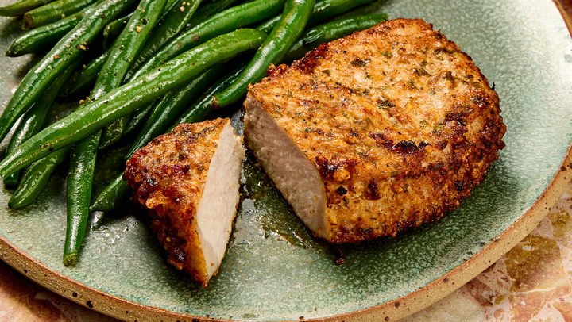

Air Fryer Pork Chops
Home

Use your trusty air fryer (or air fryer toaster oven) to make the best (and easiest) pork chops of your life.
Trust us — once you try this air fryer pork chop recipe, you'll never go back to your old method again.
Ingredients
- 1/2 cup of grated parmesan cheese
- 1 teaspoon of paprika
- 1 teaspoon of garlic powder
- 1 teaspoon of kosher salt
- 1 teaspoon of dried parsley
- 1/2 teaspoon of ground black pepper
- 4 (5-ounce) boneless pork chops
- 2 tablespoons of virgin olive-oil
Steps
- Gather the ingredients. Preheat the air fryer to 380 degrees F (190 degrees C).
- Combine Parmesan cheese, paprika, garlic powder, salt, parsley, and pepper in a flat shallow dish; mix well.
- Coat each pork chop with olive oil. Dredge both sides of each chop in the Parmesan mixture and set on a plate.
- Place 2 chops in the basket of the air fryer and cook for 10 minutes; flipping halfway through cook time.
Transfer to a cutting board and let rest for 5 minutes. Repeat with remaining chops.
- Served hot and enjoy!